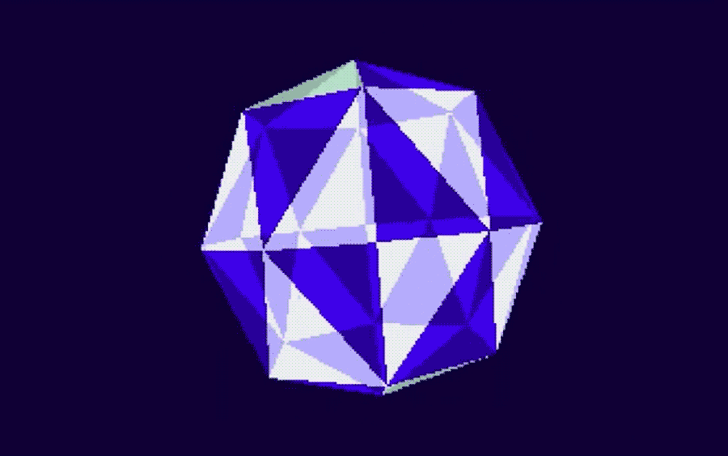

Novidades
Esteja atento as minhas novidades do dia!
|
A música tracker para o computador Amiga surgiu no final dos anos 1980, nascida da inovadora cultura demoscene.
Criada da necessidade de compor músicas para o hardware de som do Amiga, esses 'trackers' eram ferramentas de software que permitiam aos entusiastas criar composições digitais usando uma interface em forma de matriz.
Com programas como ProTracker, Ultimate SoundTracker e OctaMED, os usuários organizavam amostras, notas e efeitos dentro de um número limitado de canais.
|
 |
|
A Demoscene é uma comunidade global de artistas digitais e programadores que criam demonstrações audiovisuais em tempo real em computadores.
Essas demos mostram habilidades técnicas em codificação, gráficos e música, ultrapassando os limites do que é possível com hardware limitado.
Elas frequentemente apresentam efeitos visuais impressionantes, música e técnicas inovadoras, destacando a destreza criativa e técnica de seus participantes.
|
 |